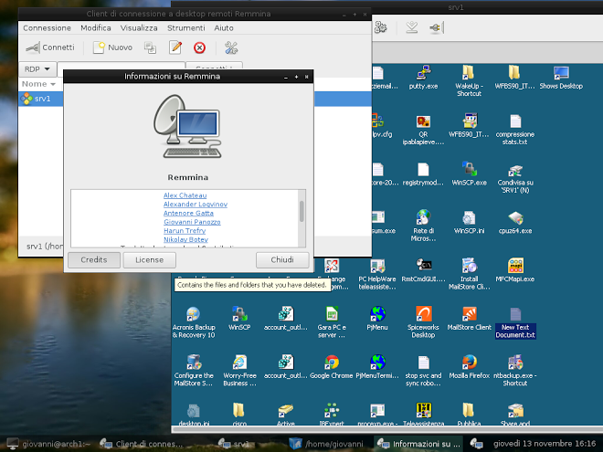

About the Remmina Project
Remmina is a remote desktop client written in GTK+, aiming to be useful for system administrators and travellers, who need to work with lots of remote computers in front of either large monitors or tiny netbooks. Remmina supports multiple network protocols in an integrated and consistent user interface. Currently RDP, VNC, NX, XDMCP and SSH are supported.
Remmina is free and open-source software, released under GNU GPL license.
News
8 Dec, 2014 - Remmina 1.1.2 Released!
So... HO HO HO! It's Christmas time and we have a little present for all of you, little geeky friends: here it comes Remmina 1.1.2 Well, ok, nothing so special, but a lot of bug fixes:
- Fixed XDMCP and other externals plugins showing a black window
- Removed call to non existent function preventing compilation (in some cases)
- Make remmina compatible with both VTE 2.90 and 2.91
- Fixed a possible crash when closing a RDP connection
- Fixed printer sharing
- Fixed various minor issues (external tools install dir, GTK3 fix)
11 Oct, 2014 - Remmina 1.1.1 Released!

As few of you may have noticed, Remmina is back, and now it's official! We just released Remmina 1.1.1, that features:
- Many bug fixes, too many to write them all here
- Some minor improvements, too minor to write them here ;-)